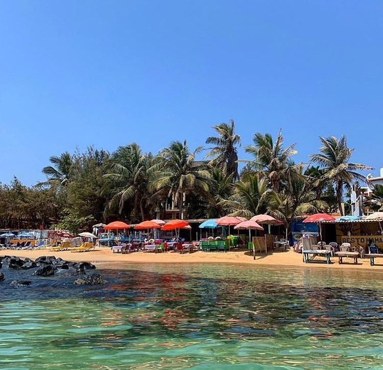
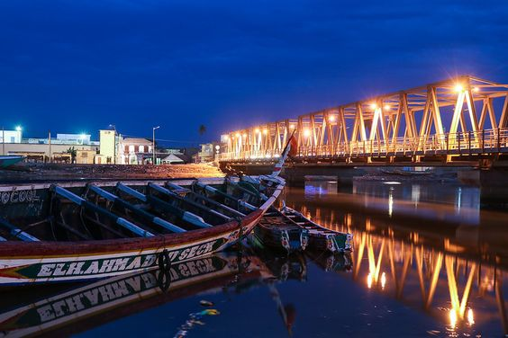
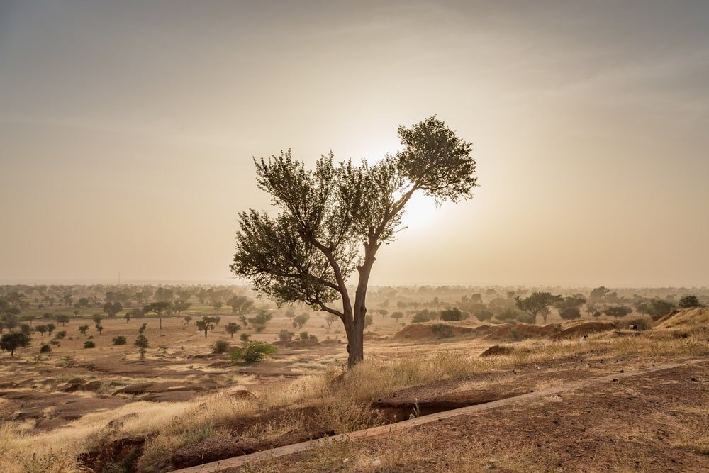
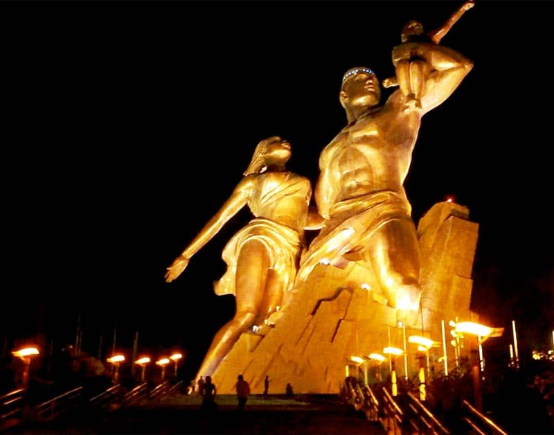
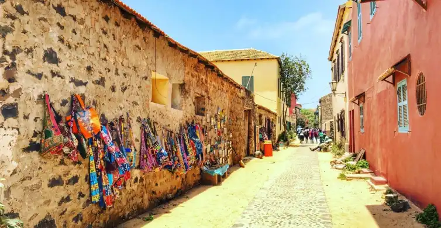
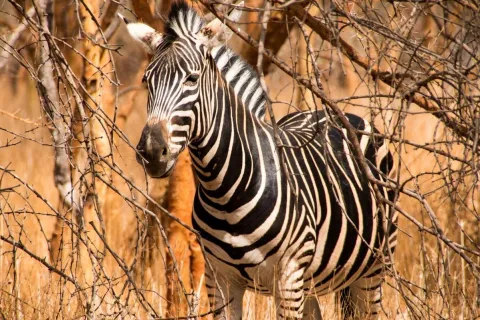
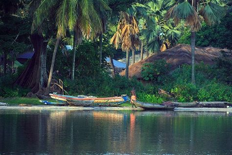
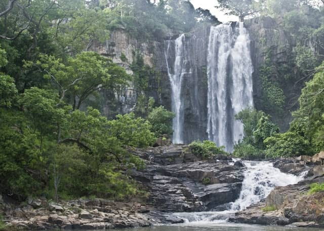
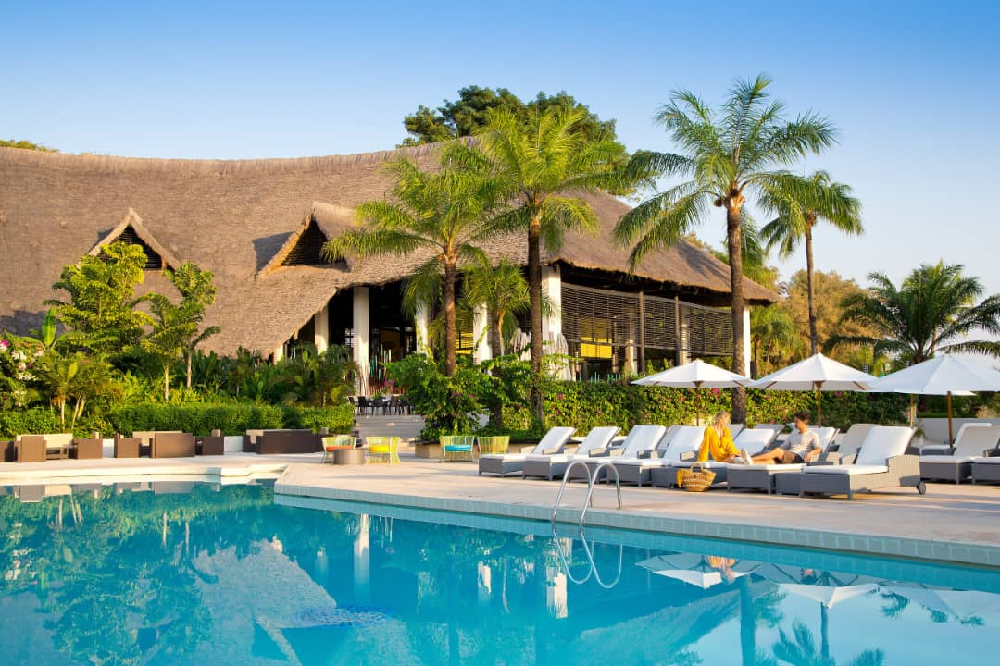

Lieux à visiter
Quelques Destinations

Île de Ngor
Embarquez pour une aventure et découvrez la capitale du Sénégal et sa culture. Profitez d'une prise en charge et rencontrez le chauffeur à votre hébergement à Dakar ou peu importe. Avec votre guide professionnel, explorez les principaux sites touristiques de Dakar, tels que l'île de Ngor .La partie de la visite dure environ 4 heures. Échappez aux rues trépidantes de la ville avec un voyage sur l'île de N'Gor. Détendez-vous sur des plages tranquilles et découvrez l'emplacement de surf idéal sur la côte nord. Profitez de votre temps en prenant un bain de soleil, en nageant, en vous promenant dans le village et en déjeunant au bord de la mer. À la fin de cette visite, retournez à votre hôtel ou logement.

Saint-Louis
Considérée pour certaines personnes comme la plus belle ville du Sénégal, Saint-Louis est l’ancienne capitale. Aujourd’hui c’est l’une des plus grandes villes de ce pays africain, elle est chargée de culture et d’histoire. Depuis l’année 2000, elle est d’ailleurs classée au patrimoine mondial de l’Unesco. La ville est en pleine mutation avec l’arrivée des touristes de plus en plus nombreux. Mais, elle a conservé ses bâtiments historiques comme le Palais du Gouverneur, sa cathédrale et ses mosquées. Bien différente de Dakar, Saint-Louis est une ville plus traditionnelle, malgré son homonyme avec la ville américaine. On y découvre une architecture conservée de l’époque coloniale, ainsi que de belles maisons à découvrir. Saint-Louis a été la capitale du Sénégal entre 1872 et 1957. Sa bonne situation, proche du fleuve, a attiré les colons anglais et français jusqu’à ce que le Sénégal devienne indépendant en 1960. Que faire d’autre à Saint-Louis ? Se diriger vers le pont Faidherbe et sa cité portuaire. À l’heure où les pêcheurs rentrent avec le poisson du jour, l’animation bat son plein.

Lac Rose
Le lac Retba, également connu sous le nom de lac Rose est l'un des sites les plus visités du Sénégal. Ce lac salé doit sa renommée à la couleur originale et changeante de ses eaux, mais aussi au rallye Paris-Dakar, dont il constituait sa dernière étape. La couleur rose de ce lac est due à l'effet de l'algue Dunaliella salina. De nombreux touristes du monte entier s'y rendent pour en admirer ses incroyables effets. Détendez-vous avec une prise en charge à votre hôtel, ou du port de Dakar, avant d'apprendre toute l'histoire de ce lieu fantastique. L'excursion dure 4 h. Vous serez accompagné par un guide touristique professionnel accrédité qui saura vous donner envie d'explorer la lagune et d'observer les dunes de sable qui l'entourent.

Le Sahel et les réserves
Vous avez l’âme d’un baroudeur en quête d’aventures ? Le Sahel et sa grande forêt tropicale bordent le Sénégal. Cette belle situation géographique est propice aux découvertes uniques. Tentez l’aventure en traversant les vallées désertiques. Découvrez des baobabs centenaires impressionnants. Étonnez-vous avec la faune et la flore, visitez les réserves et parcs, assez nombreux au Sénégal. Vous allez pouvoir faire de magnifiques photos à bord de votre 4 x 4. Découvrez le sentier écologique de la réserve de Mbour ou l’île de la Madeleine située au Nord de Dakar. Partez au parc forestier et zoologique de Hann, au parc national de Niokolo-Koba. Il y a aussi le parc national du delta du Saloum et le centre de protection des Tortues du Sénégal.

Dakar, Sénègal
Commencez par le ramassage à votre hôtel et rencontrez votre guide professionnel. Embarquez pour une visite des principaux sites touristiques de la ville et découvrez l'histoire de la capitale du Sénégal. Découvrez le monument de la Renaissance, une statue en bronze de 49 mètres de haut. Visitez le marché de Kermel et explorez ses nombreux étals connus pour leur haute qualité de fruits, légumes, viande, poisson, fleurs et artisanat. Passez par le Palais de la République, résidence officielle du président du Sénégal. Voir l'Assemblée nationale, où se réunissent les organes gouvernementaux. Après avoir découvert Dakar et l'histoire du Sénégal, retournez à votre hôtel.

Ile de Gorée
Profitez d'une visite guidée privée de l'île de Gorée avec un guide expérimenté. Apprenez-en davantage sur l'île de Gorée qui illustre l'histoire tragique de la traite des esclaves en Afrique et découvrez ce site officiellement inscrit sur la liste du patrimoine mondial de l'UNESCO en 1978. Explorez Gorée, "l'île de la mémoire", et familiarisez-vous ainsi avec l'un des premiers sites inscrits sur la liste du patrimoine mondial en raison de son importance historique. Visitez notamment la célèbre Maison des Esclaves de Gorée, le Mémorial de Dakar-Gorée, le fort d'Estrées et la plage de Gorée. Profitez d'une prise en charge aller-retour à votre hôtel à votre logement, ou à l'aéroport ou au port de Dakar.

Reserve de bandia
Découvrez certains des résidents les plus fascinants d'Afrique dans la réserve, des troupeaux d'antilopes et de gazelles aux girafes, rhinocéros et crocodiles lors de cette excursion d'une demi-journée au départ de Dakar ou de Saly. Votre guide expert vous aidera à repérer le plus d'animaux possible et à vous en dire plus sur la flore et la faune locales que vous voyez. Commencez votre visite de Bandia par une prise en charge à votre hôtel à Dakar ou Saly et partez pour la réserve sauvage dans un véhicule climatisé. La réserve faunique de Bandia est unique dans la façon dont elle a réussi à réintroduire plusieurs espèces dans la nature, ce qui crée le cadre idéal pour obtenir des photos de vacances incroyables. Après votre excursion, vous serez déposé à votre hôtel à Dakar ou Saly.

Casamance
Pour bien visiter le Sénégal, n’hésitez pas à aller au plus proche des villages, dans la Casamance, région située au sud-ouest du Sénégal, entre la Guinée-Bissau et la Gambie. Elle est considérée pour certains comme la plus belle région du pays. Elle tire son nom du fleuve et compte de nombreuses îles et des milliers d’oiseaux. Avec une végétation luxuriante, des rizières et des mangroves, partez à la découverte des villes de Ziguinchor, les plages de Cap Skirring, Oussouye, Kolda, Sédhiou, Vélingara… Entre les délicieux fruits et les rencontres avec les habitants, vous allez multiplier les découvertes.

Sine-Saloum
Sine Saloum, rien que le nom fait rêver, vous ne trouvez pas? Il s’agit de la région située au sud de la Petite Côte du Sénégal, juste au nord de la Gambie. Elle est connue pour la beauté de ses paysages, que l’on peut admirer dans le Parc national du Sine-Saloum, inscrit au Patrimoine mondial de l’Unesco. Le parc s’étend autour du delta du Sine Saloum, le point de confluence de deux fleuves (le Sine et le Saloum, logique n’est-ce pas?) avec la mer. C’est une région très particulière de par les innombrables petites îles formées par les fleuves et l’écosystème qui y règne: ce mélange d’eau douce et d’eau de mer ne convient qu’à peu d’espèces végétales et est donc le royaume de la mangrove, cette sorte de forêt poussant dans des marais maritimes et se caractérisant notamment par les palétuviers qui y poussent..
Our Gallery
memories last forever

Travel Spot
Les cascades de Dindefelo

Travel Spot
Île de Ngor
Travel Spot
Monument de la Renaissance, Dakar
Travel Spot
Sine Saloum
Travel Spot
Sine Saloum
Travel Spot
Sine Saloum
Travel Spot
Sine Saloum
coded by khalifa| all rights reserved